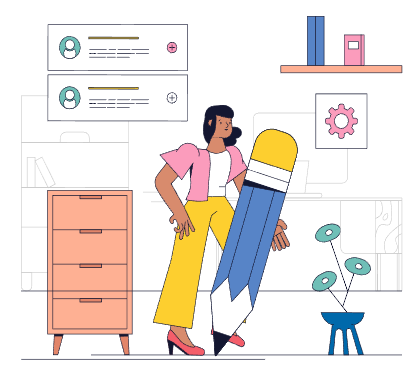

“He spends so much time texting and tweeting that he has forgotten how to write correctly, how to spell, how
to
develop ideas in more than 140 characters.” (Carillo, 38)
“Foundational literacies such as reading and writing print text will continue to play a crucial role—and
maybe
even a more essential role—in this digital age because of the proliferation of information.” (Carillo, 40)

Piktochart
We live in a Digital Age in which technology dominates our lives. When texting and tweeting become trends,
grammar and sentence structure are left out to be optional.
In addition to social media, people receive more information than ever before, this leads to an overload of
unnecessary information which essentially damages the ability of comprehension and critical thinking.